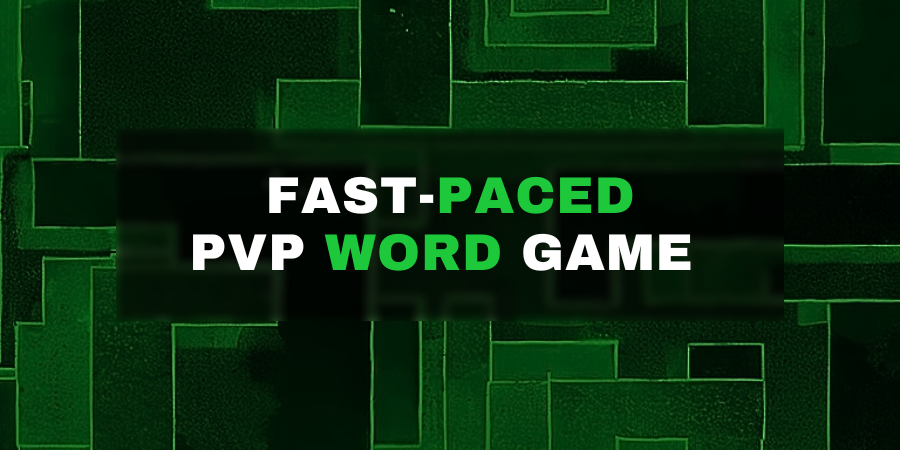

Fast-paced, real-time, online, player vs player word game.
In Lexicon Legends, players blitz out as many words related to an assigned topic as they can. NLP cosine-similarity is used to determine the player that made better guesses, and a winner is declared.